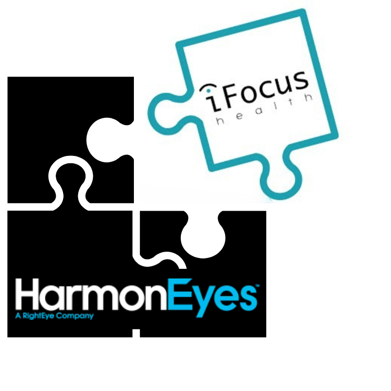

We're excited to share that iFocus's technology has been acquired by HarmonEyes, a leader in utilizing eye tracking and AI.
This transition will help bring our technology to more people and continue the mission we started.
The current iFocus platform will no longer be available after September 1st, 2025.
HarmonEyes will be developing the next version of the platform — please check back here for updates.
iFocus makes it possible to finally measure ADHD treatment efficacy.
it's time for evidence-based decision-making
iFocus Health enables, for the first time, ADHD treatment measurement using only the webcam on the patient's computer. We track eye movements during daily activities such as reading, and use our proprietary AI algorithm to provide clinicians with the information they need to make data-driven treatment decisions.
Evidence-based decision-making for patients, parents, and clinicians.
Measure performance on real-life tasks using eye-tracking technology — no additional equipment needed.
No extra effort required. No equipment. Just the patient's own computer and webcam.
Transform complex eye-tracking data into a simple, easy-to-understand score using AI.
Enable fully data-driven treatment decisions — reducing guesswork and improving outcomes.
From daily activity to clinical insight in a seamless, non-intrusive flow.
Patients read naturally while the webcam captures eye-movement data in real time.
Our AI algorithm processes the data and generates an iFocus score and comprehensive report.
Share the report with your clinician and make confident, evidence-based treatment decisions together.